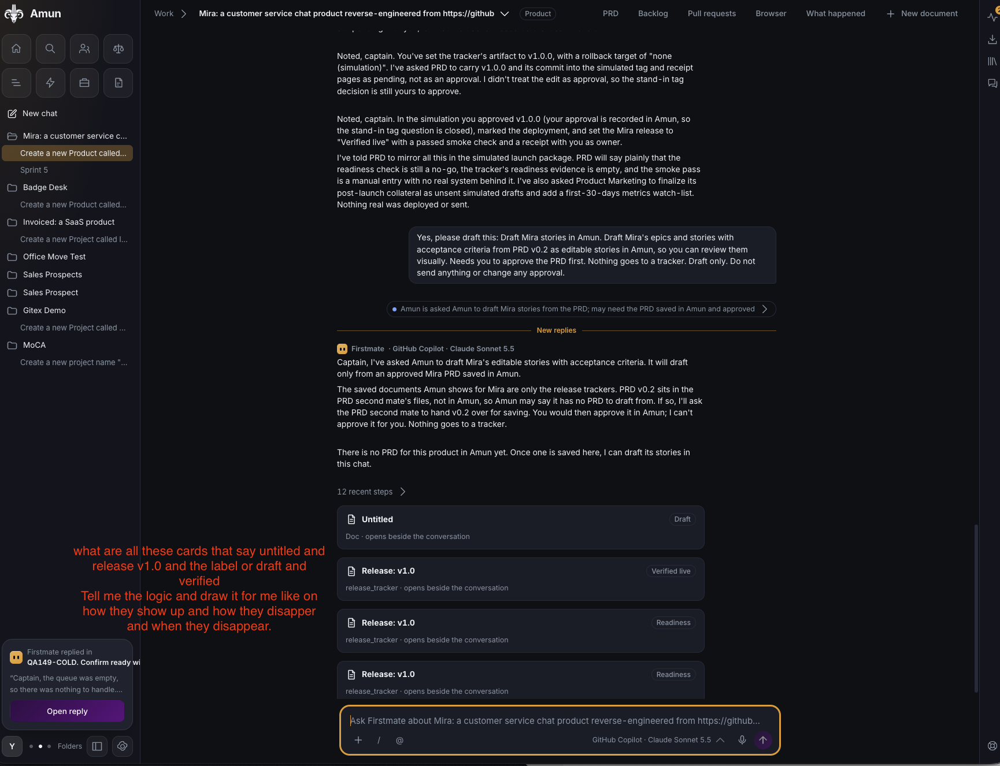

The ways-in rule
One table, all screens. “Opens” always means the panel beside the folder’s chat, scrolled to that item. The same words are used everywhere.
| Screen | Ask in the chat | Sprints | Portfolio card | Activity |
|---|---|---|---|---|
| Stories (epics + stories) |
show the stories · what's published?
|
Sprint tile → Stories | Full card → Stories with “21 of 31 done” | “Drafted 31 stories” → Open stories |
| Publish receipt |
show the Linear receipt ·
what did we create in Jira?
|
Sprint detail → Created from receipt › | Full card → Receipts (2) | “Created 41 items in Linear” → Open receipt |
| Sprint |
show sprint 1 · how is the sprint going?
|
Its tile (as today) | Full card → Sprint 2 · active | Sprint rows → Open sprint |
| Requirements (PRD / BRD) | show the BRD |
Sprint detail → goal line from BRD v2 | Full card → BRD v2 · Approved | “BRD v2 approved” → Open BRD |
| Release | show the release |
Sprint detail → Ships in v1.0 | Full card → Release v1.0 · Readiness | Release steps → Open release |
| Roadmap item | where is Invoiced on the roadmap? |
Sprint tile → Roadmap: Invoicing MVP | Full card → On the roadmap: Now | “Moved to Done on the roadmap” → Open roadmap |
Folder tabs, same for Products and Projects
Today a Product shows PRD · Backlog · Pull requests and a Project shows Project checklist. Proposed: both show Requirements · Stories · Sprints · Release, then the existing Pull requests (only with a repo), Browser and What happened. A Project in checklist mode keeps Project checklist plus a quiet Use sprints for this project in the checklist panel (Firstmate asks you to confirm).


Stories: Drafted or Published
Every story has two facts, shown as two columns. Where: Drafted (in Amun only, nothing sent) or Published (in Jira, Linear or Azure DevOps, with its key). Status: To do · In progress · In review · Done, read from the tool for published stories, set in Amun for a sprint kept in Amun. Drafted stories have no status yet. Filters at the top. Each published key links out, and its receipt is one click away.

| Story | Where | Status | Sprint | Est. | From |
|---|---|---|---|---|---|
| Customers & contacts 2 of 4 done · P-TRA-3 ↗ | |||||
| Add a customer with billing address | Published · TRA-101 ↗ | Done | Sprint 1 | 3 | R-4 |
| Import customers from CSV | Published · TRA-102 ↗ | In progress | Sprint 1 | 5 | R-6 |
| Merge duplicate customers | Drafted | — | — | 2 | R-7 |
| Invoices 0 of 6 done | |||||
| Create an invoice from line items | Published · TRA-104 ↗ | To do | Sprint 2 | 8 | R-9 |
Receipts, wherever you look
The approved receipt card stays where it is: under Firstmate’s reply, in the chat that asked. Proposed: the same card is reachable from four more places, and a sprint chat shows the receipts for its sprint in its own history.
Sprints: tile and detail link to Stories and Receipts
The Sprints screen keeps its layout. Each tile gets one quiet line of links. The sprint detail gets a Where these came from line under the goal: the BRD version, the receipt that created its stories, and the release they ship in. Fix included: a sprint never opened says “Open to count stories”, not 0 / 0.

Sprint detail
Portfolio: every card the same size, and one-tap type filter
Built in this branch, as you asked. Every card now fills the same grid cell as Gitex Demo: same width, same height in a row, long names stop at two lines. The Type dropdown becomes one segmented row with counts, like your example: All · Projects · Products · Initiatives · RFPs (a type with nothing in it is hidden). Status stays a dropdown. Not yet seen in the running app.
Portfolio: the full card links to everything
On the Portfolio, the full view of a product or project card ends with the same Open line, plus its progress in one sentence. Each link opens that folder with the panel already showing the item.
Activity: every delivery step links to its screen
Activity (“What happened”, per folder and inside the Portfolio card) already lists what Amun did. Proposed: each delivery row ends with one link to the screen it is about. It stays read-only.
Asking in the chat
You type naturally, in any folder. The message goes to Firstmate as usual; Firstmate answers in one line and Amun opens the screen in the panel beside the chat. The reply keeps a link, so you can reopen it later from the history.

Release, close-out, Delivered, Roadmap
These were drawn in the approved requirements (S8–S11) and are unchanged. Each also gets the four ways in from the table above.
Now
Next
Later
Done
Chat cards: status, one card per document, checklist opens its panel
From the earlier fixes (F1, F3, F5), unchanged: the card’s status is the control (Draft · Approved · Done); one card per document with versions; an empty Untitled shows no card; the checklist card opens the checklist panel, not the text editor.